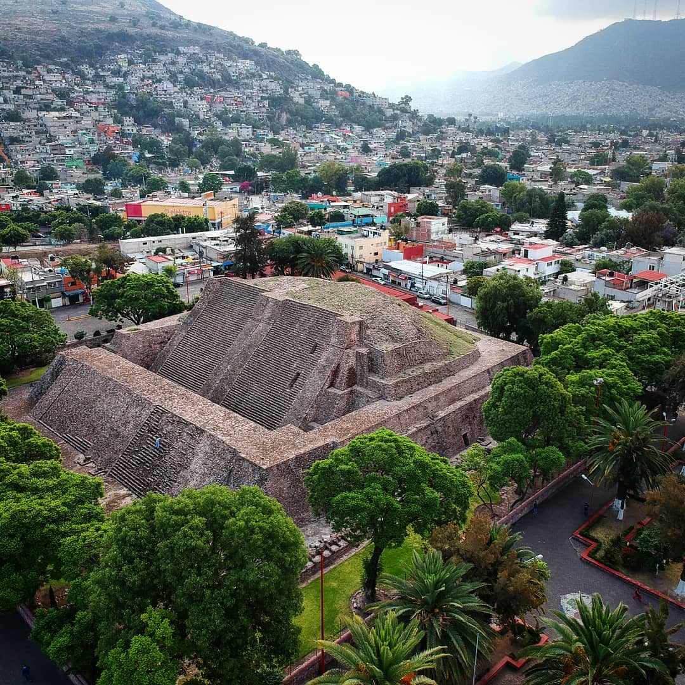
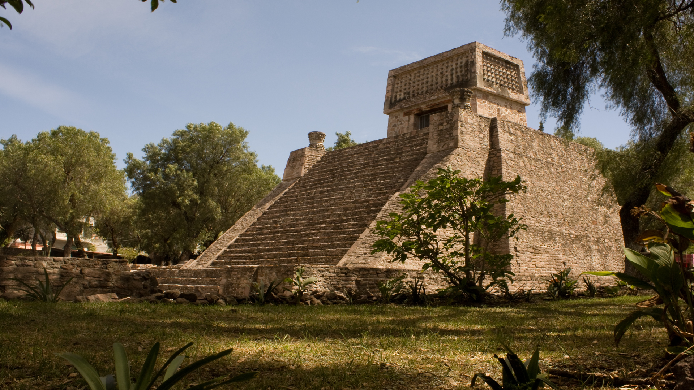
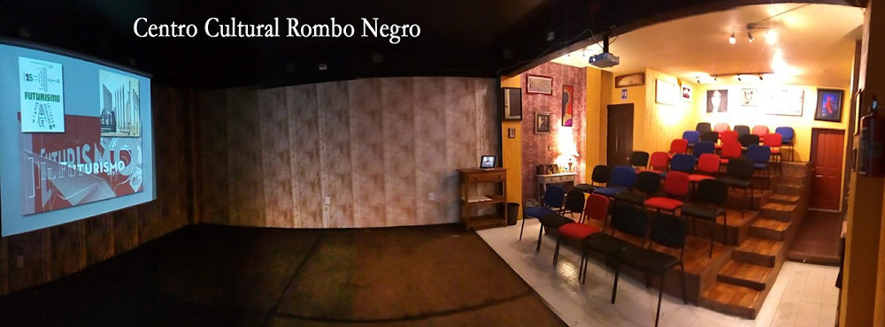
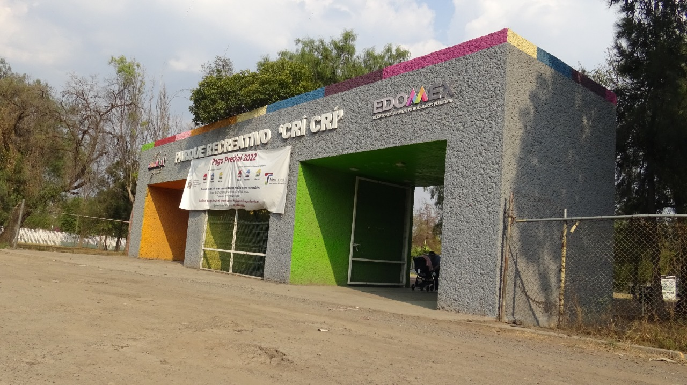

Visitanos
Estos lugares ofrecen una variedad de experiencias que combinan historia, cultura, y recreación en Tlalnepantla. ¡Espero que encuentres alguno de tu interés, nya~! =^w^=
Pirámide de Tenayuca
Descripción del lugar: La Pirámide de Tenayuca es una zona arqueológica de gran importancia histórica, considerada la "cuna de la serpiente emplumada". Este sitio prehispánico refleja la influencia tolteca y mexica en la región. El complejo cuenta con una estructura piramidal y un museo que exhibe objetos encontrados durante las excavaciones.
Ubicación exacta: Calle de la Pirámide S/N, Colonia Tenayuca, Tlalnepantla, Estado de México.
Horarios de apertura y cierre: Martes a domingo, de 9:00 a 17:00 horas.
Costo: Entrada general $60 MXN; estudiantes, profesores y personas de la tercera edad con credencial vigente, entrada gratuita.
Zona arqueologica de Santa Cecilia Acatitlan
Descripción del lugar: La Zona Arqueológica de Santa Cecilia Acatitlán es un pequeño pero significativo sitio prehispánico que presenta una pirámide reconstruida, similar a la de Tenayuca. Este lugar fue un importante centro ceremonial mexica. Además de la pirámide, el sitio cuenta con un museo que alberga piezas arqueológicas y ofrece una visión de la vida en el México antiguo.
Ubicación exacta: Avenida Acueducto S/N, Colonia Santa Cecilia, Tlalnepantla, Estado de México.
Horarios de apertura y cierre: Martes a domingo, de 9:00 a 17:00 horas.
Costo: Entrada general $60 MXN; estudiantes, profesores y personas de la tercera edad con credencial vigente, entrada gratuita.
Espacio Cultural Rombo Negro"
Descripción del lugar: El Espacio Cultural Rombo Negro es un centro independiente dedicado a la promoción de las artes y la cultura en Tlalnepantla. Este espacio ofrece una variedad de actividades culturales, incluyendo exposiciones de arte, presentaciones de teatro, proyecciones de cine independiente, y talleres creativos. Rombo Negro es un punto de encuentro para artistas locales y una plataforma para nuevas expresiones culturales en la región.
Ubicación exacta: Calle Sor Juana Inés de la Cruz No. 46, Colonia Centro, Tlalnepantla, Estado de México.
Horarios de apertura y cierre: Varían según los eventos y actividades programadas, generalmente de martes a sábado de 12:00 a 20:00 horas.
Costo: Entrada gratuita para la mayoría de las exposiciones; algunos eventos especiales pueden tener un costo que varía según la actividad.
Parque CriCri
Descripción del lugar: El Parque Cri-Cri es un espacio recreativo inspirado en el famoso personaje infantil creado por Francisco Gabilondo Soler, "Cri-Cri". El parque ofrece áreas de juegos infantiles, jardines y una pista para correr, lo que lo convierte en un lugar ideal para pasar un día en familia. El parque también cuenta con estatuas y murales que rinden homenaje a las canciones y personajes de Cri-Cri.
Ubicación exacta: Calle Juan Escutia S/N, Colonia La Romana, Tlalnepantla, Estado de México.
Horarios de apertura y cierre: Abierto todos los días, de 6:00 a 20:00 horas.
Costo: Entrada gratuita.
